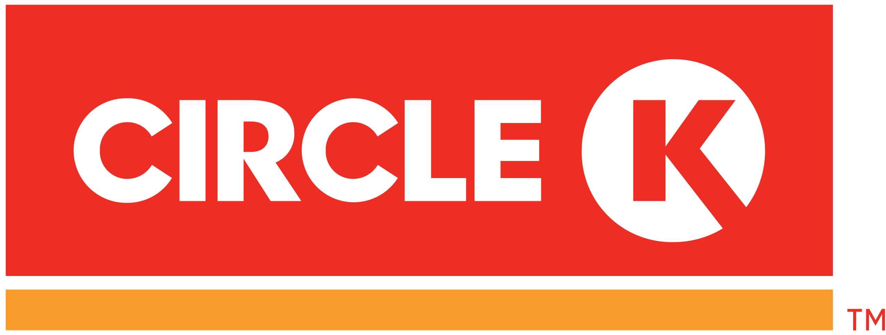

Dylan Tyrrell
17 Oak Drive · Blessington, Co. Wicklow
(+353) 83-3191490
dylantwork7@gmail.com
A constantly determined student who wants to reach the boundaries of technology and go even further through major opportunities in the IT world. With a problem-solving mindset plus a high motivation to learn brings an excitement to see new areas and expand my knowledge of the growing ICT environment. Hoping to evolve my personal strengths such as team motivation and work ethic, communication, and technical skills to make a beneficial contribution to your organisation while learning valuable knowledge of my surroundings in the industry.
Education
September 2017 - Present: Technological University Dublin - Tallaght Campus
Course: BSc in Computing with IT Management (level 8)
Current GPA Level - 3.54
A Levels (x5), B+ Level (x11), B Level (x11)
Most recent Year Results
| Subject | Grade |
|---|---|
| Server-Side Web Development | A |
| Operating Systems | A |
| Innovation & Entrepreneurship | B- |
| Cloud Service | A |
| Big Data Technologies | B |
| Adv Routing & Switching | B+ |
Work Experience
January 2021 - August 2021 Software Engineer Fidelity Investments
Company Description:
Multinational financial services corporation.
Main Responsibilites
• Coding in JavaScript and Typescript, fixing bugs and adding features to complete Projects on time.
• Creation of Integration Tests in Gherkin and Java to ensure sites (Salesforce etc.) in working condition.
• Committing and Pushing files to Repo and creating Pull Requests.
July 2019 - January 2021 Retail Assistant Circle K
Company Description:
International chain of convenience stores along with dispensing fuel.
Main Responsibilites
• Dealing directly with customers over purchases and queries both in person and over the phone.
• Stocking and counting sales.
• Sorting and dealing with cash managed by the store.
Key Skills
The following are some of what i consider to be some of my best skills around the work place and what i carry with me everywhere i go.
Problem Solving
• Developed through analysing, observing, and making clear design decisions throughout my Software Engineer internship and second year Project
Time Management
• Aim to finish every project without putting myself and others under pressure.
• While keeping work at a high standard.
Customer Service / Interpersonal
• I have been able to gain a very solid set of communication skills through past work in retail and IT Teams.
• I can manage to sort and deal with customer issues very quickly and provide the best possible solutions.
Teamwork
• Grew through the constant group activities in my internship and college that required a cohesive team to reach our goals.
• The importance of solid teamwork is key to any project.
Technical Skills
These are a list of some of the technical skills i have acquired over time through work and university, i woul consider these to be my most promising strong points under a technical microspcope.Software Design and Development
• I can confidently develop using JavaScript and Typescript.
• Design and develop websites and Integration Tests through JavaScript, Typescript and Gherkin
Databases
• The ability to write SQL queries on an intermediate to high level using Oracle.
• Can create and design database schemas based on an understanding of normalised and ERD designs.
• Administrating an Oracle database server using Enterprise Manager and SQL commands.
Operating systems
• Solid experience with using both Windows and Linux operating systems in system administration.
• Can write scripts in PowerShell and Python.
Networking and Cloud
• Designing, building, and troubleshooting networks using routers and hubs with related tools.
• Have experience of using cloud environments such as AWS during my internship and college.
• Can configure a router using the Cisco IOS commands and VLSM.
Business and Management
• Extensive use of DevOps and GitHub to Keep on top of management on several projects.
Data Analysis
• Analyse data with tools like Excel, Tableau and Python using statistical and visualisation techniques.


Projects
MQTT Messaging System Using Subscriber/Publisher Model
Description:
An MQTT messaging system allows user to easily send messages to one or many recipients. It is a subscriber/publisher model rather than a client/server model. A user subscribes to receiver messages on a given topic. Any user can publish a message to the topic and all subscribers will receive the message. As an example, a user could subscribe to a music artist and they will receive an update regarding new music or albums.
Challenges Faced:
• Storing messages in separate sections of database.
• Filtering numerous messages by specific message types
Technologies and Tools Used
Google Cloud, Visual Studio, DevOps, Python, Linux, SQL, Firebase, GitHub, Java, Salesforce
Interests and Achievements
Professional - Vocational
• 2nd Year IT Hackathon Award Certificate: Best Prototype.
• 2nd Year IT Hackathon Award Certificate: Runner Up.
• Attended several IT events and presentations from companies throughout the past few years.
• Involvement in research and partaking of stock exchange.
• First aid certificate.
Sporting - Clubs and Colleges
• 2015 – 2019: Played forward for Blessington football club, many awards, and trophies.
• Competed in numerous cross-country events, collected several medals.
• 2018 winner of local basketball competition alongside top scorer.
• Member of Boxing club and Airsoft club for TUD - Tallaght